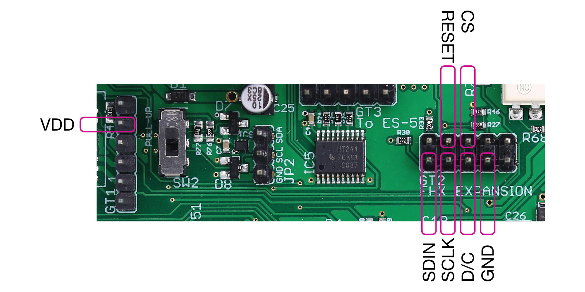

A mount for an OLED display to fit a Eurorack 1U row. It is 14HP and drilled for the Intellijel 1U format.
Copyright ©2022 Expert Sleepers Ltd
Please refer to LICENSE.md for licensing information.
Please note that Expert Sleepers® is a registered trade mark in the UK. Remove any branding before making a derivative work.
The GitHub project page is here.
The project consists of the PCB and two connectors. One is a common-or-garden through hole 7-way 0.1" pitch header. The other is a surface mount 16-way 0.1" pitch header, Samtec part number SSM-116-L-SV.
Note that the PCB footprint is for the 20-way version, SSM-120-L-SV, but the 16-way version is slightly cheaper and provides all the necessary connections.
The board is designed for use with the ER-OLEDM023-1 display modules by BuyDisplay.com (aka EastRising). Choose the "Pin Header Connection-4 Wire SPI" option.
Colour options:
This was mainly created for use with the disting EX Eurorack module.
disting EX firmware version 1.14 or higher is required. Enable the second display in the Settings, and reboot the module.
On the disting EX, connections are mainly made to the FHX expansion header (GT2), with one connection to the ICSP header (for 3.3V power).

Please use the forum.